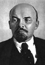

Lenin’in en büyük problemi insafsızlıktı.
— Mikhail Gorbachev
1917 yılındaki Rus Devrimi’nin lideri ve Sovyetler Birliği’nin kurucusu olan Vladimir Ilyich Lenin (1870–1924) dünyanın ilk komünist devletini kurmuştur. Düşmanlarını etkisiz hale getirmiş ve yazılarıyla nesiller boyu devrimcilere ilham kaynağı olmuştur. Sert çehresi tarihin en ünlü yüzlerinin arasında bulunmaktadır. Bir zamanlar Doğu Avrupa’da neredeyse her meydanda onun bir heykeli vardı. Dünya çapında milyarlarca insanın hayatını etkileyen bir ideolojinin temsilcisidir.
Asıl adı Vladimir Ilyich Ulyanov olan Lenin hali vakti yerinde bir ailenin çocuğuydu. Nispeten varlıklı olmalarına karşın ailede yaygın bir monarşi karşıtlığı vardı: Lenin’in ağabeyi Alexander (1866–1887), Çar 3. Alexander’a (1845–1894) başarısız da olsa suikast girişiminde bulunduğu için idam edilmişti. Bu olay Lenin’in hayatında bir dönüm noktası oldu.

1902 yılında Lenin adını aldı ve hukuk eğitimi görmeye başladı. Mezun olduktan sonra 1917’ye kadar olan hayatının büyük bölümünü politik faaliyetleri nedeniyle sürgünde geçirdi. Almanya, İsviçre, İngiltere ve Finlandiya arasında mekik dokudu. Komünist gazetelere yazılar yazdı, politik teorilerini geliştirdi.
1917 yılında Çar devrilince Lenin, İsviçre’den Rusya’ya dönerek komünistlerin başına geçti. Ekim Devrimi olarak anılan bir darbe organize ederek çarın yerini alan geçici hükümeti devirdi. Bu hareketin sonucunda Sovyetler esas yetkili konumuna gelmişti.
Sonraki on yıllar boyunca radikal bir program doğrultusunda sosyal ve ekonomik reformlara imza attı. Özel mülkiyeti yasakladı ve endüstriyi ulusallaştırdı. İşçiler kollektiflerde çalışmaya başladı. Politik muhaliflerini saf dışı bıraktı. Ancak ekonomi politikaları 1921 yılında 5 milyon Rus’un ölümüne yol açan bir kıtlığa neden oldu.
1922’de inme geçiren Lenin ömrünün son yıllarını hasta olarak geçirdi. İnmeyi izleyen felç nedeniyle büyük acılar çekiyordu. Kimileri hastalığının asıl kaynağının frengi olduğunu öne sürdü. Yerine Joseph Stalin (1879–1953) geçti. Lenin 21 Ocak 1924 tarihinde elli üç yaşında öldü.
Ek Bilgiler
1- Biyografi yazarı Robert J. Service’a göre Lenin ömrünün son döneminde öyle çok acı çekiyordu ki iki kez kendini zehirleyerek intihara teşebbüs etmiş, ancak son anda vazgeçmişti.
2- Lenin’in mumyalanmış bedeni halen Moskova’daki Kızıl Meydan’da bir anıt mezarda sergilenmektedir. Rusya’nın dini liderleri ve anti komünist gruplar mumyanın gömülmesini talep etmektedirler.
3- 1924 yılında ölümünün ardından Saint Petersburg şehri Leningrad adını almıştır. 1991 yılında Sovyetler Birliği’nin çökmesiyle birlikte şehrin sakinleri eski adın benimsenmesi yönünde oy kullanmıştır.